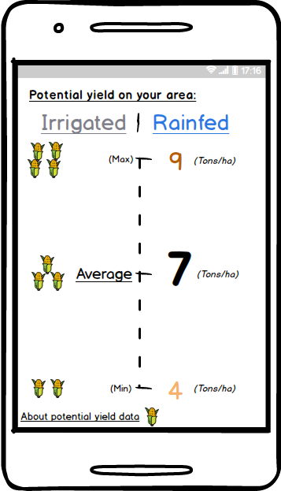

Acerca de la informaci?n de rendimiento
potencial
AgroTutor
utiliza la ubicaci?n de su parcela, fecha de siembra, caracter?sticas del cultivo
plantado y pr?cticas de riego y la combina con informaci?n de suelos pre
almacenada as? como informaci?n de clima para mostrar los resultados que el modelo
de cultivo denominado EPIC produce. El modelo utiliza datos hist?ricos de clima
y suelos que cubren 3 d?cadas (1980-2010) para informar sobre rendimiento
potencial durante este per?odo y AgroTutor despliega promedios, m?nimos y
m?ximos rendimientos obtenidos en el ?rea donde est? la parcela. Esto para dar
una idea de las potencialidades productivas del lugar si el rendimiento no se
limita por el efecto de plagas o nutrientes. La tabla abajo muestra las
condiciones que el modelo utiliza para sus c?lculos:
|
Caracter?stica agron?mica |
Condiciones |
|
Manejo de nutrientes/ fertilizantes |
Los nutrientes se aplican en tiempos y cantidades
?ptimas, sin existir d?ficit de nutrientes. |
|
Riego |
El riego se aplica en cantidades y tiempos ?ptimos,
evitando d?ficit de agua. |
|
Clima |
Las variables clim?ticas consideradas son radiaci?n solar, temperatura y precipitaci?n. Si la parcela tiene riego, la precipitaci?n se ignora. Los datos clim?ticos tienen una resoluci?n de 25x25 km. |
|
Suelo |
Las caracter?sticas del suelo consideradas incluyen profundidad, textura, pH y contenido de material org?nico. Ya que se asume la aplicaci?n requerida de nutrientes, el suelo se considera como sitio de almacenamiento y provisi?n de agua. Solamente se consideran los suelos predominantes en la regi?n. |
|
Pendiente |
La pendiente afecta la p?rdida de agua por
escorrent?a. El modelo utiliza el promedio de pendiente en la regi?n. |
|
Fechas de siembra |
Las fechas de siembra utilizadas se calibran
de acuerdo a la fechas de siembra y clima reportados en la literatura. La fecha
de siembra es la misma en cada a?o y cada regi?n geogr?fica, excepto cuando
la temperatura est? por debajo del m?nimo requerido lo que la retrasa. |
Para m?s informaci?n, presione aqu?